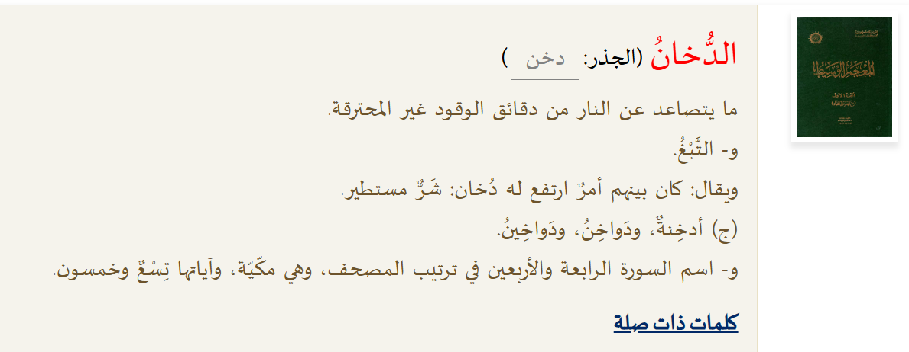

الدخان في اللسان العربي وفي دلالات اللغة العربية يُقصد به الشيء الملتهب أو ما نتج عن وهج وحرارة. وإذا نظرنا إلى الموروثات السائدة في زمن الرسول ﷺ، لوجدنا أن أغلب المعتقدات والفلسفات اليونانية والكتب السابقة كانت تزعم أن أصل الكون هو "الماء". لكن القرآن الكريم جاء ليقرر حقيقة مختلفة تماماً بقوله أن أصل الكون دخان.
هل الدخان هو بخار الماء؟
قد يتساءل البعض: أليس تفسير الصحابة للدخان بأنه "بخار الماء"؟ في الحقيقة، هذا التفسير كان اجتهادياً من الصحابة رضوان الله عليهم وليس نصاً قاطعاً من الوحي. وقد ذهبوا لهذا التفسير لأن عرش الله كان على الماء، فاستنبطوا أن البخار تصاعد من ذلك الماء.
ولكن، لماذا يُعتبر هذا التفسير غير دقيق من الناحية اللغوية الصارمة؟ لأن كلمات القرآن دقيقة جداً وقوية لغوياً؛ فالله سبحانه يضع كل كلمة في موضعها الدقيق. فلو كان المقصود هو البخار، لقال "وهي بخار"، لكنه سبحانه قال "دخان".
الدخان في اللغة والاصطلاح
الدخان في اللسان العربي هو: "ما يتصاعد من النار من دقائق الوقود غير المحترقة". وهذا يختلف جوهرياً عن البخار. وقد ناقش كبار العلماء هذه المسألة بعمق:
- فخر الدين الرازي: ذكر أن الدخان يتكون من أجزاء صلبة ويابسة تختلط بالهواء، بينما البخار مائي رطب، ووصف القرآن للسماء بالدخان يشير لمادة معتمة تختلف عن البخار الشفاف.
- اللغويون (الفراء والزجاج): رأوا أن الأصل في اللغة هو "الحقيقة"، وبما أن الله قال دخان، فهو الدخان الناتج عن وهج وحرارة شديدة، لا البخار الناتج عن البرودة.
- ابن تيمية: أوضح الفرق الجوهري بينهما، معتبراً الدخان مادة مركبة من "الهواء والنار" (بالمصطلح القديم)، مما يخرجه عن كونه مجرد بخار ماء.
الفارق الفيزيائي
الدخان ناتج عن احتراق المواد ويحتوي على جزيئات صلبة ومواد كيميائية، ويتميز بـ "الكدرة والظلمة". أما البخار فهو ناتج عن تبخر السوائل ولا يحتوي على جزيئات صلبة ويتميز بـ "الصفاء والرطوبة". وهذا يتطابق مع الاكتشافات الحديثة التي تصف مادة الكون الأولية بأنها غازات ساخنة وجزيئات دقيقة تشبه الدخان تماماً.
والله تعالى أعلم